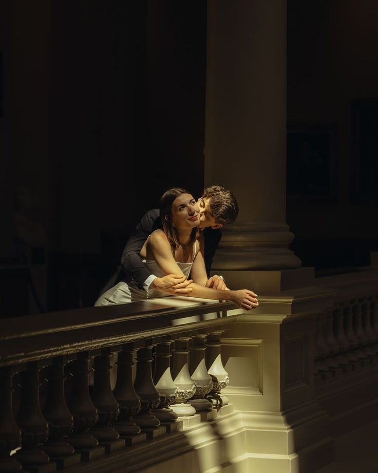

JENNY & JASON

WITH LOVE AND GRATITUDE, WE INVITE YOU TO SHARE IN THE JOY OF OUR WEDDING DAY


Your presence is the most cherished gift of all. However, should you wish to honor us with a gift, we would be delighted by a contribution to our registry.
REGISTRY

